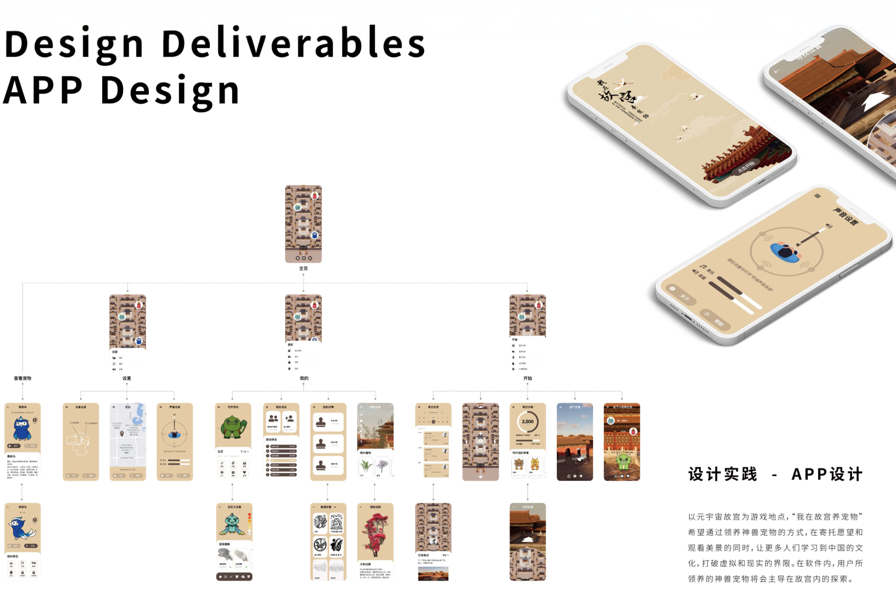
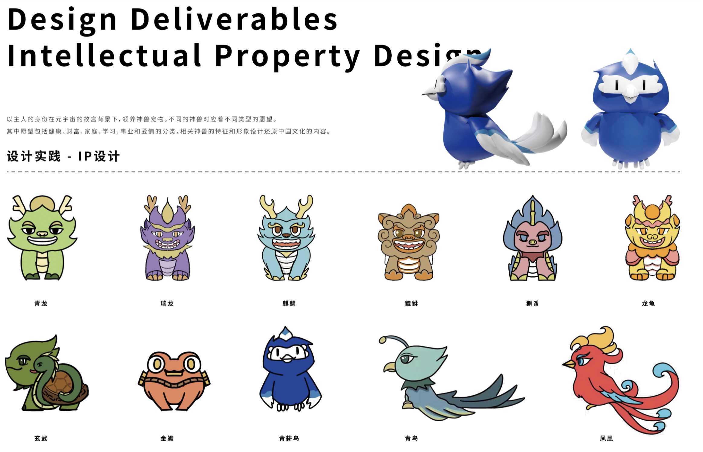

Overview
With the metaverse becoming increasingly popular, my teammate and I created a mobile pet care game app that utilizes VR and XR technology within China’s Forbidden City. Within the game, mythical creatures will lead users to explore the Forbidden City, completing various tasks along the way to strengthen the user’s interest about Chinese culture and promote their lifestyle. The two of us submitted our project to Wupen's 2022 Metaverse Design Competition and won the first prize.

